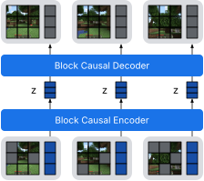
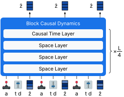

Two Roles in a World Model
AIR's specialization carries over from puzzles to a recurrent world model
TL;DR: In AIR, one network updates two latent states, and only one of the two updates sees the input. On puzzles, that alone was enough for the two states to take on different jobs. Here we use AIR as a world model that predicts video of simulated robots one step at a time, updating each state once per step. The same split shows up again, both on a single task and in a model trained on all 18 tasks of DeepMind Control, and over 24 imagined frames the model is more accurate than a causal Transformer with twice its parameters. Three caveats:
- To remember what a single frame cannot show, such as how fast something is moving, the model needs gradients through time. AIR's usual one-step gradient does not provide them.
- AIR's own schedule of six updates per step is worse here: one update of each state lowers air's error by 32–39%, at a third of the compute.
- Two separate half-size networks are still 7–12% more accurate than the one shared network.
Setup
A world model predicts what an agent will see next, so that the agent can practice inside the model instead of in the real environment. It takes what the agent has seen so far and the action it takes, and predicts the next frame. Dreamer 4 is a recent example, and it has two parts. A tokenizer compresses each video frame into a handful of latent tokens. A large dynamics Transformer then predicts the next frame's tokens from the actions and the tokens of earlier frames, attending over all the frames that came before.


We replace Dreamer 4's Transformer with AIR, which updates two latent states with one network and lets only one of the two updates see the input. For the tokenizer we use a pretrained one from Nicklas Hansen's open-source Dreamer 4 implementation, frozen. The two states are zL and zH, and the input goes only into the update of zL. On puzzles the input is the same at every step. A world model is harder in three ways: a new frame arrives at every step; some things, like velocity, cannot be read off any single frame and have to be remembered; and when the model imagines the future, there are no frames at all.
The model has no attention over past frames, so its two states are its only memory. At each time step, we combine the current frame's latent tokens, the action and a task token into one input xt. The network then updates zL once and zH once, we read the prediction of the next frame from zH, and both states are handed to the next time step. We compare three ways of wiring a step:
We train every model in two ways: with AIR's one-step gradient, which stops the gradient at the end of each time step, or with backpropagation through time (BPTT) over 32 steps. AIR itself runs six updates per step on puzzles (L, L, H, L, L, H); Section 4 shows that one update of each state works better here, so we use that throughout. Model size and optimizer are AIR's defaults; we did not tune anything else for accuracy.
1. The two states take on different roles
To test whether the two states do different jobs, we read the prediction from both of them. The prediction head is trained to read the next frame from zH; we apply the same head to zL as well. If the two states held the same information, the head would do about equally well on both. We call zL's error divided by zH's the readout ratio: a value near 1 means the states are interchangeable, and a large value means only zH holds the prediction.
The two states split the work whenever only one update sees the frame, whether or not they share weights. In air, reading the prediction from zL is about 500 times worse than from zH with BPTT, and still about 90 times worse with the one-step gradient. In sym, where the frame goes into both updates, the ratio is between 5 and 7 with BPTT and below 3 with the one-step gradient. The two-network models, hrm_half and hrm, split just like air.
This does not mean zL is empty: it holds information in a form the prediction head cannot use. A linear probe reads the simulator state from it at least as well as from zH (Section 2), much like the scratchpad role zL played on puzzles.
The same split holds on every one of the 18 tasks of DeepMind Control. Cup-catch is a single task, so we also trained one model on all 18 tasks of the DMC Visual Control suite, with about 18 times as much data:
2. Memory needs gradients through time
AIR's one-step gradient never tells the model what to carry forward from earlier steps. With it, the loss at one time step never sends a learning signal back to earlier steps. On puzzles that is fine, because the puzzle is shown again at every step and nothing has to be carried over. In a world model it matters: a single frame shows where things are but not how fast they move, so the model has to carry that forward itself.
To measure memory, we test how well the model's state predicts the true physical state, positions and velocities, while the model imagines. We fit a linear probe from each of the two states to the simulator's state on some episodes, score it on others with R² (1 is perfect, 0 is guessing the average), and report the better of zL and zH. As a baseline, the dashed line applies the same probe to a single true frame. A single frame shows where things are but not how fast they move, so it scores only about 0.43. A state that scores well above this line must be carrying velocity forward from earlier steps, even though, while imagining, the model never sees the frame at all.
In our runs, air learned to remember only with backpropagation through time. With the one-step gradient, air stays close to the dashed line (0.46 against 0.43): its state knows little more than a single frame shows. With BPTT it reaches 0.80, and its error over the 24 imagined frames drops almost 3 times. sym retains more than air with the one-step gradient (0.67) and also gains from BPTT (0.84). The 18-task models follow the same pattern: air reaches 0.61 with BPTT and 0.49 with the one-step gradient, sym 0.58 and 0.50, against 0.40 for the frame alone.
The further back the gradient reaches, the better the model remembers and predicts, up to the full 32-step window. We cut the gradient every K steps during training; K = 1 is the one-step gradient and K = 32 is BPTT over the whole window. A reach of 4 steps recovers most of the memory, but the error keeps falling beyond that: at 8 steps it is still about 50% above full BPTT. With one update of each state per step, a shorter reach does not make training cheaper, so there is no reason to truncate.
| Gradient reach K (air, cup-catch) | error | state R² |
|---|---|---|
| 1 step (one-step gradient) | 0.0342 | 0.46 |
| 4 steps | 0.0218 | 0.70 |
| 8 steps | 0.0183 | 0.74 |
| 16 steps | running | running |
| 32 steps (BPTT) | 0.0123 | 0.80 |
Error over the 24 imagined frames and state R² as in the figure above. Mean over 3 seeds; the 16-step runs are still training.
Memory does not depend on sending the frame only into L, and it does not have to sit in zH. With BPTT, sym remembers at least as well as air. In air on cup-catch, the probe reads the physical state best from zL (0.80) and less well from zH (0.61), although only zH yields the prediction; on the 18 tasks the two states score about the same (0.61 and 0.58).
3. Accuracy
To measure accuracy, each model sees 8 frames and then imagines the next 24 on its own. The figure shows what air's imagined frames look like, and the table gives the error over those 24 frames. All models here are trained with BPTT.

| BPTT model | cup-catch | 18 tasks |
|---|---|---|
| air | 0.0123 | 0.0353 |
| sym | 0.0176 | 0.0411 |
| hrm_half (two networks, same parameters) | 0.0108 | 0.0329 |
| hrm (two networks, 2× parameters) | 0.0136 | 0.0349 |
| repeat the last frame | 0.236 | 0.165 |
Mean squared error between the predicted and the true latent tokens of each frame, averaged over the 24 imagined frames and held-out test windows; lower is better. While imagining, the models get the actions but no frames. “Repeat the last frame” predicts that nothing moves. Mean over 3 seeds.
Sending the frame only into L makes the model more accurate than sending it into both updates. air's error is 30% lower than sym's on cup-catch and 14% lower on the 18 tasks, where it is lower on every task.
Two separate half-size networks (hrm_half) are slightly more accurate than one shared network. With the same number of parameters as air, hrm_half's error is 12% lower on cup-catch and 7% lower on the 18 tasks, where it is ahead on 14 of the 18. hrm, whose two networks are each as large as air's one, is not more accurate than air despite twice the parameters (0.0136 against 0.0123 on cup-catch, 0.0349 against 0.0353 on the 18 tasks).
We also compare against a causal Transformer like the one we replaced, which has to feed its own predictions back in to imagine. It follows Dreamer 4's dynamics model without its noise objective, with twice air's parameters and the same data and number of steps. Since it has no state of its own to imagine in, each prediction goes back in as the next frame. To compare fairly, we run our models the same way here.
On cup-catch, air is more accurate than the Transformer at every imagined frame. Over all 24 frames its error is 64% lower, with every air seed ahead of every Transformer seed, and by the 24th frame the Transformer's error is more than three times air's.
On the 18 tasks, the Transformer is more accurate for the first 11 frames, and air after that and over all 24. The Transformer's first-frame error is about a third of air's, but by the 24th frame it is 50% higher. Over all 24 frames air's error is 19% lower (0.065 against 0.080), with every air seed ahead of every Transformer seed. The Transformer also depends much more on the task: it is about twice as good as air on reacher and about 20% better on three of the four cartpole tasks, but about four times worse on cheetah and seven times worse on pendulum. hrm_half is ahead of the Transformer from the 9th frame, and its error over all 24 frames is 38% lower. A Transformer with air's parameter count (4 layers, 13.6M) reaches only 0.104, so the Transformer's early lead depends on its size. We did not tune it.
Imagining in its own latent state, rather than from its own predicted frames, reduces air's error further. On cup-catch the difference is small (0.0143 fed back, 0.0123 in its own state). On the 18 tasks it is large (0.0649 and 0.0353): in its own state, air is ahead of the Transformer from the 7th frame, and its error over all 24 frames is less than half the Transformer's.
Beyond 24 frames, the Transformer falls further behind. Evaluated over 56 imagined frames on the 18 tasks, the Transformer's error is about 50% above air's at the 24th frame and about twice air's at the 40th and the 56th. From the 28th frame on, the Transformer is worse than predicting that nothing moves; none of the recurrent models crosses that line within 56 frames, and air imagining in its own state is still at a third of it at the 56th.
4. Ablation: how many updates per step
AIR itself runs six updates per step, and in a world model that is worse than one update of each state. On puzzles, AIR updates zL twice, then zH once, and repeats this (L, L, H, L, L, H). We first ported that schedule unchanged; every model above instead runs one L-update and one H-update per step. The table compares the two schedules for each variant.
| cup-catch | 18 tasks | |||
|---|---|---|---|---|
| Updates per step | six | one pair | six | one pair |
| air | 0.0201 | 0.0123 | 0.0517 | 0.0353 |
| sym | 0.0289 | 0.0176 | 0.0699 | 0.0411 |
| hrm_half | 0.0211 | 0.0108 | 0.0396 | 0.0329 |
| hrm | 0.0303† | 0.0136 | 0.0542 | 0.0349 |
| air, one-step gradient | 0.0511 | 0.0342 | 0.0709‡ | 0.0459 |
Error over the 24 imagined frames, as in Section 3; all rows but the last are trained with BPTT. Mean over 3 seeds; † two seeds (the third diverged at the start of training); ‡ one seed.
One update pair is more accurate for every variant, by 17% to 55%, at a third of the compute per step. Training is also more consistent: on the 18 tasks air's three seeds span 0.0007, against 0.0067 with six updates. Even with the one-step gradient, air with one pair (0.0459 on the 18 tasks) is more accurate than air with six updates and BPTT (0.0517).
The findings of Sections 1 to 3 hold under both schedules, except for two comparisons. With six updates, air also specializes (a readout ratio of 255 on cup-catch and 90 on the 18 tasks, against 501 and 196 with one pair), also needs BPTT to remember, and is also more accurate than sym. What changes is how air compares with the other architectures on the 18 tasks. With six updates, hrm_half is 23% more accurate than air; with one pair, 7%. And with six updates, the Transformer is 12% more accurate than air over 24 frames fed back; with one pair, air is 19% more accurate.
Which part of the six-update schedule hurts is not yet clear. The extra updates lengthen the path the gradient travels (768 layers over 32 steps instead of 256), overwrite the states more often, and inject the frame more often. Halving the depth of the network while keeping six updates does not help (0.0495 on the 18 tasks). The schedules in between should separate these explanations:
| Schedule of one step (air, 18 tasks, BPTT) | updates | error |
|---|---|---|
| L, H | 2 | 0.0353 |
| L, L, H | 3 | 0.0378‡ |
| L, H, L, H | 4 | running |
| L, H, L, H, L, H | 6 | running |
| L, L, H, L, L, H (AIR) | 6 | 0.0517 |
Mean over 3 seeds; ‡ two seeds. A second L-update per step already raises the error by 7%; the other two schedules are still training.

What it means
- Where the input enters decides the roles. The split we saw on puzzles survives continuous dynamics, changing frames and imagination; it does not need separate weights, and it holds under both update schedules.
- How the gradient flows decides what gets remembered. HRM, TRM and AIR all cut the gradient between supervision steps: HRM and AIR keep only a one-step gradient within a step, and TRM backpropagates through its last full recursion. This keeps training inexpensive and is sufficient when the input does not change. A world model has to carry information from one step to the next, so its gradient has to cross steps too. Here that took backpropagation through time over the 32-step window. With one update of each state per step, this cost no more training time or GPU memory than the one-step gradient in our runs, because every update in a step is differentiated either way; with AIR's six updates it took about twice the time and three times the memory. The gradient also has to reach far: cutting it every 8 steps instead of 32 leaves the error about 50% higher.
- One update of each state per step is enough for a world model. On puzzles, where the input is fixed, repeated updates within a step add reasoning depth. Here a new frame arrives at every step, and AIR's six updates cost accuracy as well as compute, for every architecture we tried. Why is open.
- A recurrent state can be more accurate than attention over past frames, at half the parameters. On a single task, air is ahead of the Transformer at every imagined frame. On the 18 tasks, the Transformer is ahead for the first 11 frames and air after that, by more when it imagines in its own state.
- Sharing the weights costs a little accuracy. Two half-size networks are 7–12% more accurate than one shared network with the same number of parameters, although both specialize equally.
Next steps
- Find out why six updates per step are worse than two, starting with the schedules in between (Section 4).
- Train with windows longer than 32 steps, since accuracy still improves as the gradient reaches further.
- Put the model to use the way world models are meant to be used: for planning, or for training a policy inside it.
Acknowledgments
Experiments ran on the RANGE cluster of the Center for Research Computing at Rice University, with compute provided through Prof. Anastasios Kyrillidis's group.